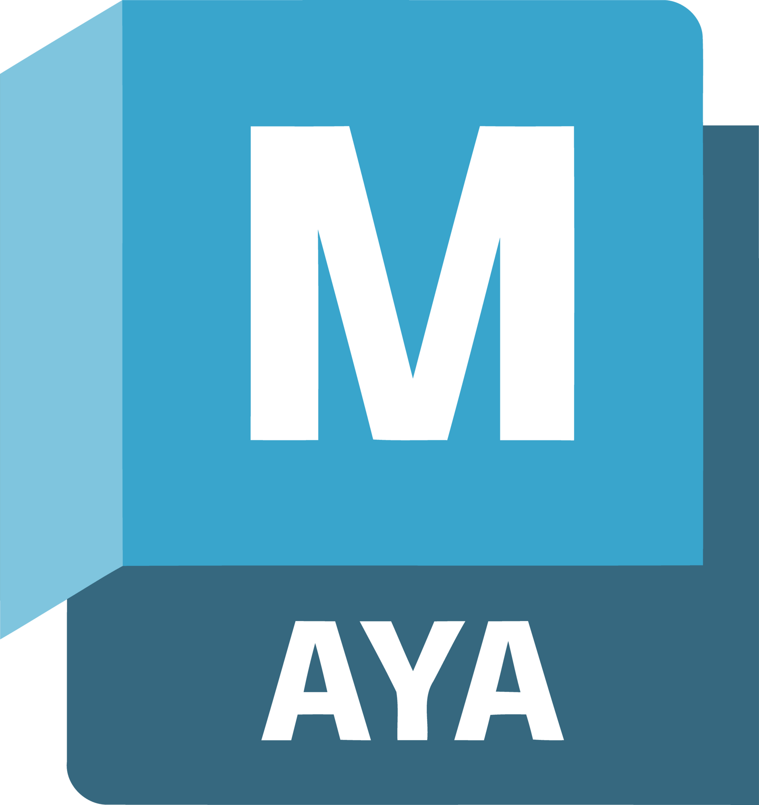
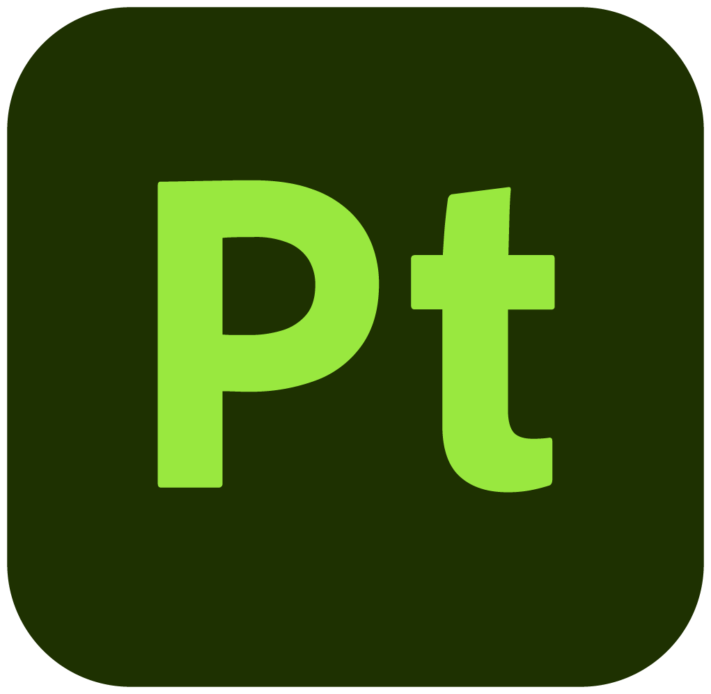
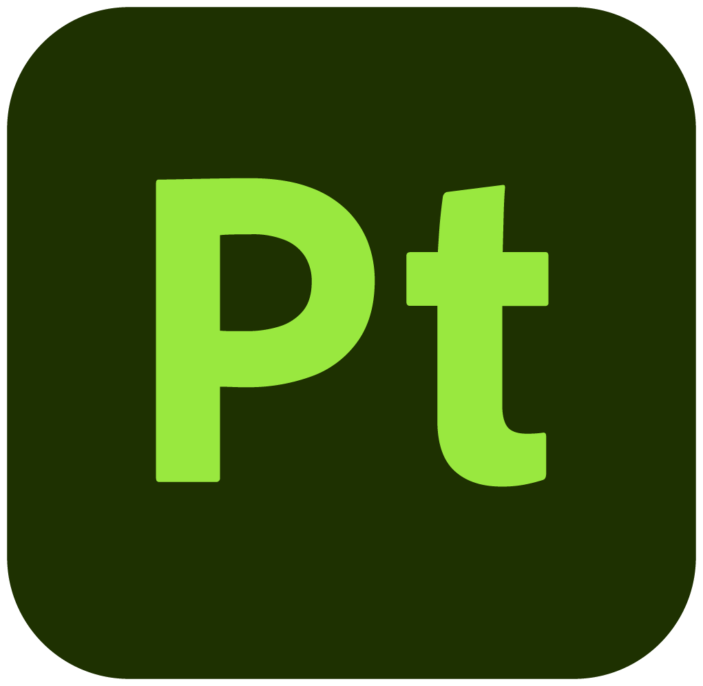
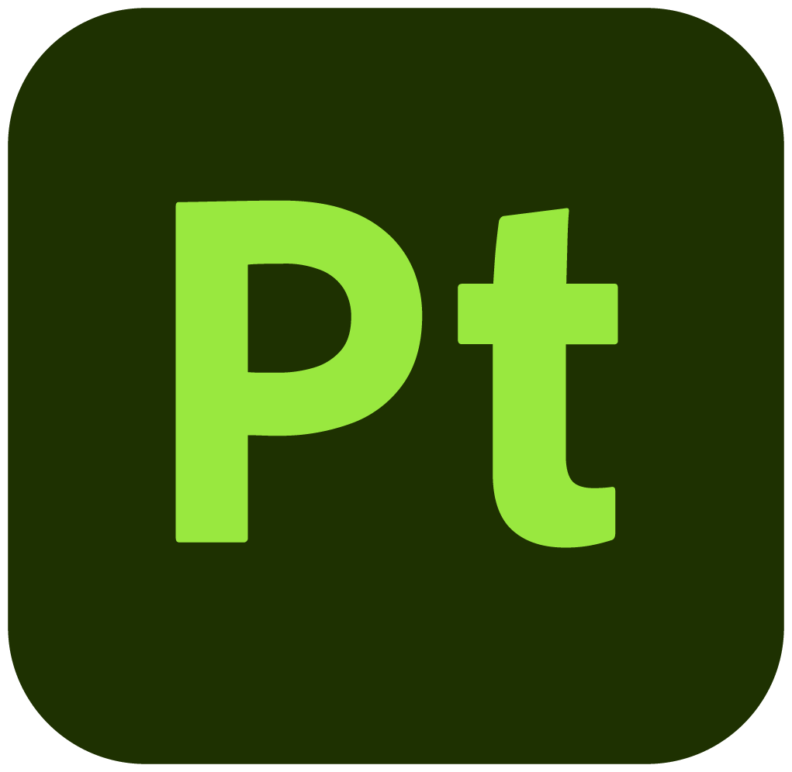

Prince
Project Summary
This stylized 3D character was created for real-time rendering, focusing on appealing shapes, expressive forms, and clean topology. The full workflow included high-poly modeling and sculpting, retopology, baking, and texturing.
The character was modeled and retopologized in Maya, sculpted in ZBrush, and textured in Substance Painter using 2K resolution maps for optimal quality. Final lighting, presentation, and rendering were done in Marmoset Toolbag, emphasizing balanced materials, vibrant colors, and a polished game-ready look.
Texture maps: 2K
Software Used

Maya
 ZBrush

Substance 3D Painter
Marmoset toolbag
ZBrush

Substance 3D Painter
Marmoset toolbag
ZBrush

Substance 3D Painter
Marmoset toolbag